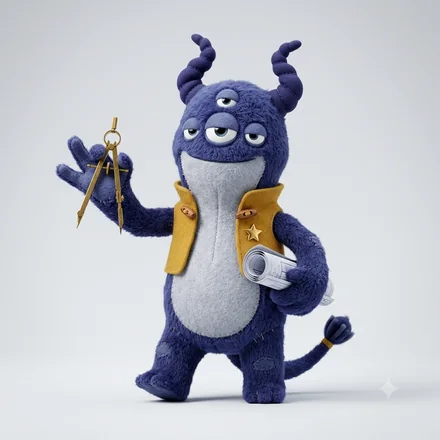
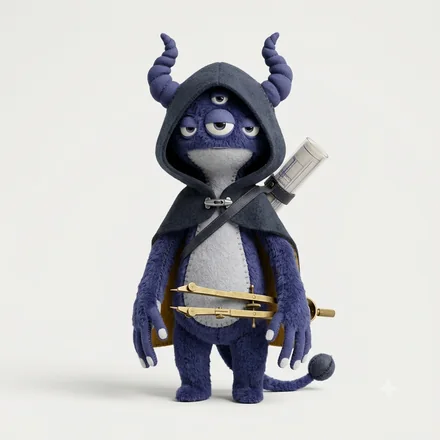

monster type
INTJ-O-C
沈潜する設計モンスター
遠い地点から逆算して、道をつくる人
あなたという人
頭のなかに「こうあるべき最終形」があり、そこから逆算して現在を設計します。目先の空気より構造の正しさを優先するため、判断は速く、そして孤独になりがちです。理解されるまで説明を尽くすより、結果で示そうとする傾向があります。
問いを抱えたまま、ひとりで深く潜っていくタイプ。考え直しが続くうえ、途中経過を見せる相手も選ぶので、外からは長い沈黙に見えます。浮かんできたときには誰も辿り着けない深さまで行っていますが、その間、周囲は何も知りません。
4つのサブタイプの中での位置

INTJ-A-H旗を掲げる設計モンスター
INTJ-A-C黙して断ずる設計モンスター INTJ-O-H問い直す設計モンスターINTJ-O-C沈潜する設計モンスター
INTJ-O-H問い直す設計モンスターINTJ-O-C沈潜する設計モンスター同じ基本タイプでも、自分への確信（A / O）と人への構え（H / C）で現れ方が変わります。
強みと、気をつけたいところ
ここは基本タイプ（INTJ）に共通する性質です。
強み
- 長期の見通しを具体的な工程に落とせる
- 前例のない問題でも、自分の枠組みをつくって挑める
- 感情に流されず、意思決定の質を保てる
気をつけたいところ
- 自分のなかで結論が出た話を、共有せずに進めてしまう
- 相手の理解速度への配慮が後回しになる
- 完成度を上げすぎて、着手や公開が遅れる
INTJ-O-C ならでは
このタイプの強み
誰も手をつけない難問に、時間をかけて向き合える。長期の研究や、答えのない設計に強さが出ます。
落とし穴
沈黙が長いほど「止まっている」と誤解される。週に一度、進んだかどうかだけでも外に出す約束をしておくと、潜る時間そのものを守れます。
仕事での適性
力を発揮する環境
裁量が大きく、目的が明快で、細かい口出しの少ない環境
向いている役割
戦略設計、仕組み化、長期プロジェクトの舵取り
難問の解像度を上げる役に強い。途中経過を共有する習慣が武器になる。
相性
かみ合う相手


見ている世界が補い合う組み合わせ。人への構えが同じなので距離の取り方で揉めにくく、自分への確信が違うぶん、迷いのなさと慎重さを互いに預けられます。
安心できる相手


テンポも間合いも近く、説明のいらない関係になりやすい相手。長く一緒にいても疲れにくい組み合わせです。


相手のコードがわかれば、2人の相性をこの場で見られます。
この人との相性を調べるこの診断は、回答時点での自己認識を6つの軸で整理したものです。人の性格は状況や時期によって変わります。
© 2026 WONDER BROTHERS INC. All rights reserved.